Sports
|
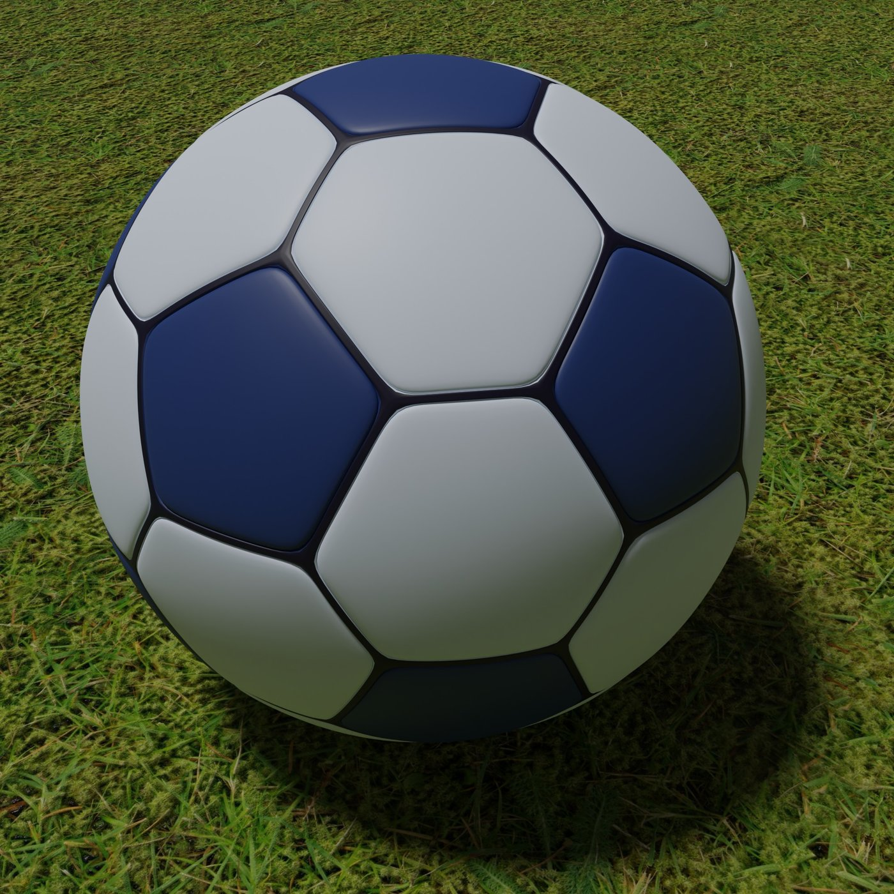
Soccer
|
Soccer feels like a dance on the field, all about timing, flow, and instinct. The best plays make you stop and just watch in awe. |
|
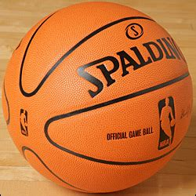
Basketball
|
Basketball is a fast, flowing performance where every move counts. The best moments feel like pure artistry, with skill, timing, and instinct all coming together. |
|
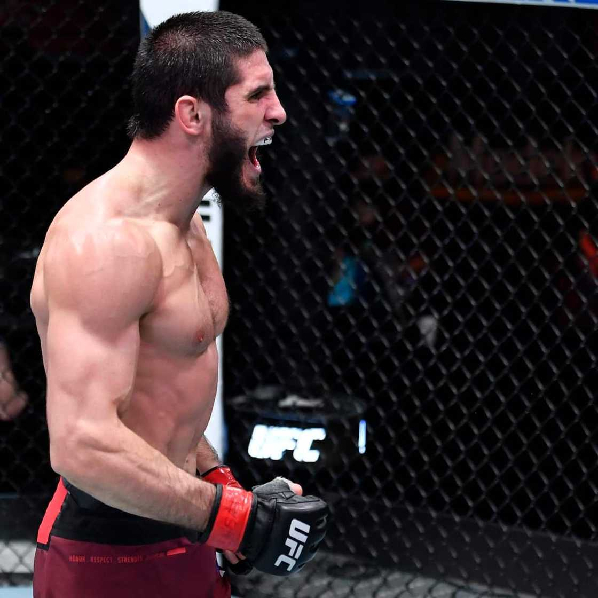
MMA
|
MMA is a mix of chess and dance, where every move and timing matters. The best moments feel raw and almost artistic, showing skill, strategy, and heart. |
|
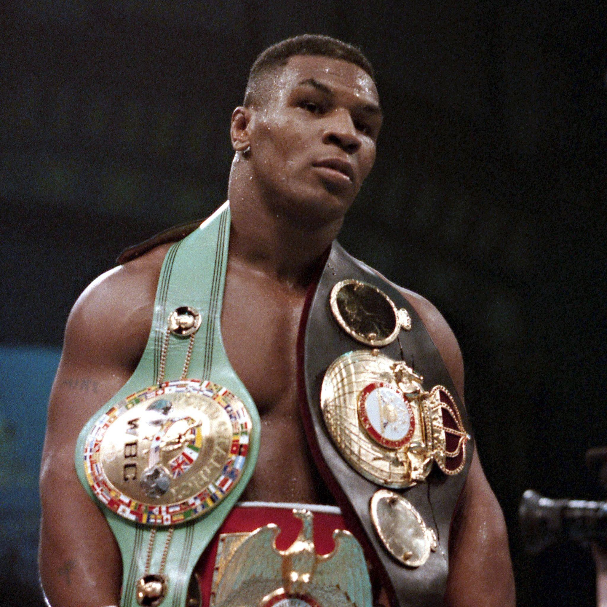
Boxing
|
Boxing is a rhythm of motion and instinct, where every punch and dodge tells a story. The best exchanges feel like art—fast, precise, and intense. |

Hockey
|
Hockey is a high-speed dance on ice, where skill, speed, and instinct all flow together. The best plays feel almost like art, full of adrenaline and teamwork. |
Top 5 Teams in Top 5 Leagues
A collection of my top 5 favorite teams in my favorite sport, soccer, across the "Big Five."

Barcelona
|
Barcelona has a history full of legendary players like Messi, Xavi, and Iniesta. Their style has evolved, but creativity, skill, and beautiful dominance have always defined them. |

AC Milan
|
AC Milan has a history full of legends like Maldini, Van Basten, and Kaka. Their style has evolved, but power, skill, and strategy have always defined them. |
|
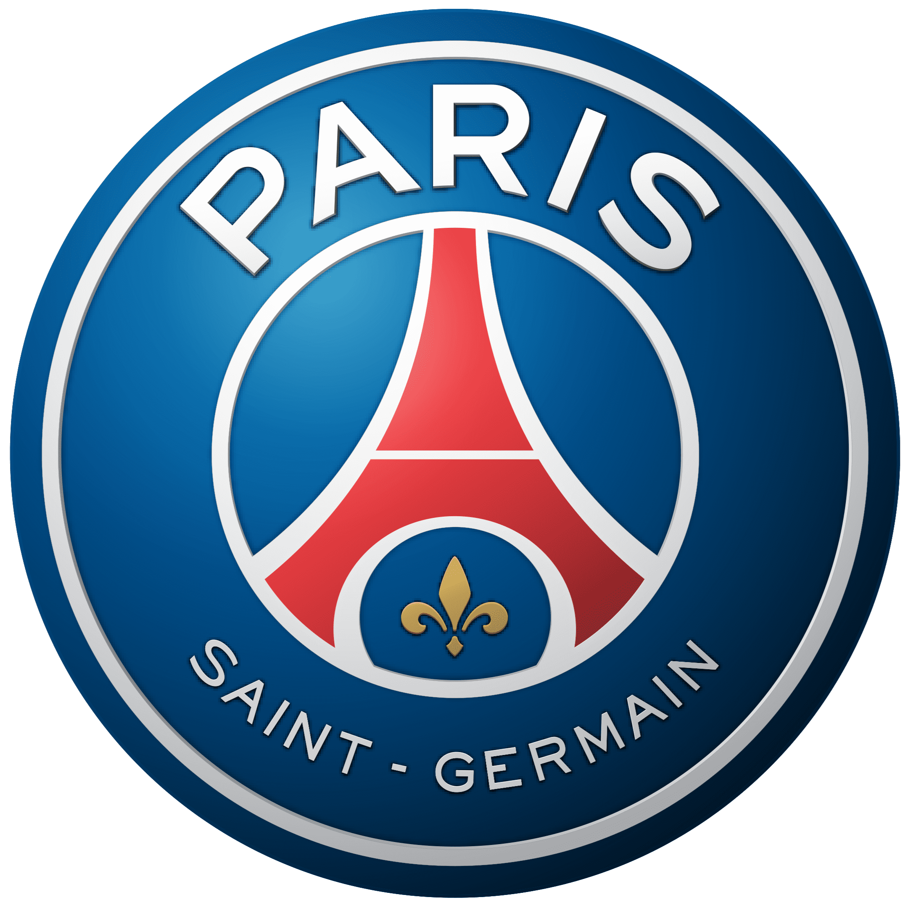
Paris Saint-Germain
|
PSG has a star-studded history with players like Mbappé, Neymar, Messi, and rising star Douné. Their flashy, attacking style always shows skill and raw talent in action. |

Arsenal
|
Arsenal has a rich history with legends like Henry, Bergkamp, and Vieira. Their style has evolved, but skill, strategy, and flair have always defined their game. |
|
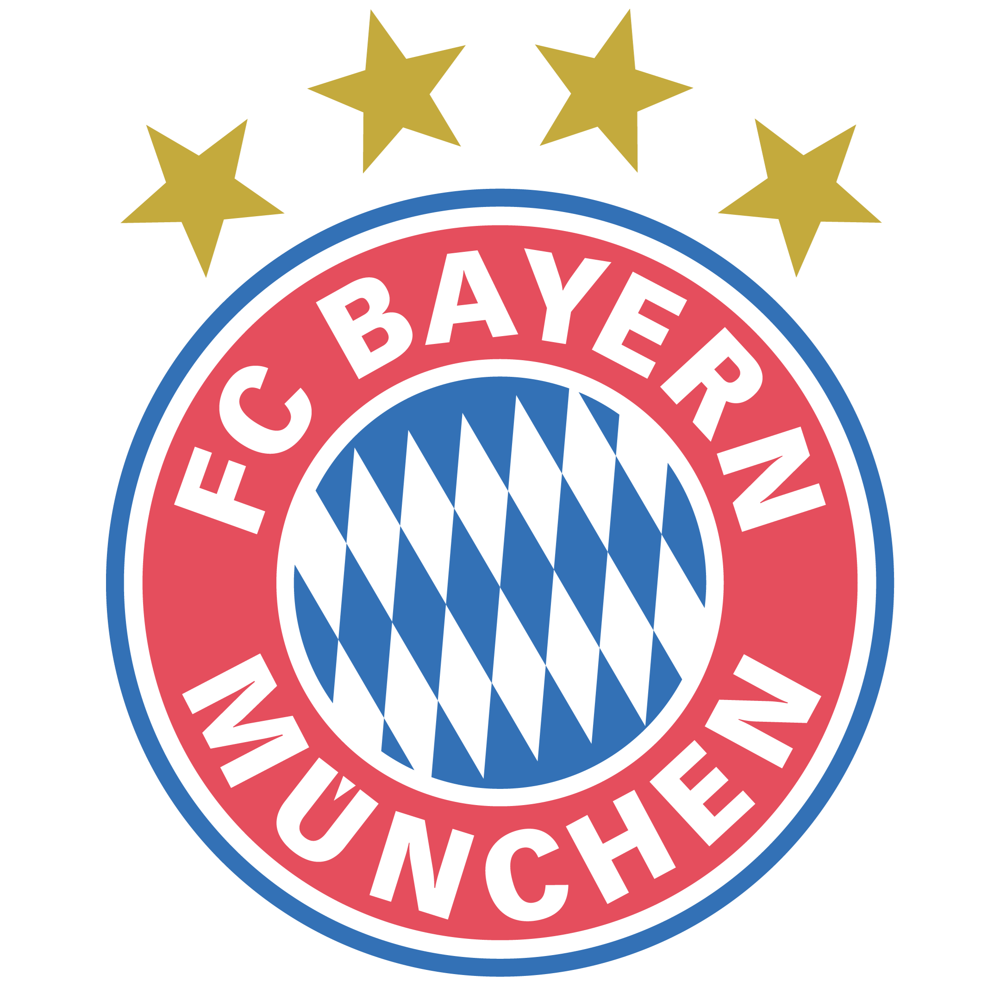
Bayern Munich
|
Bayern Munich has a legendary history with players like Lewandowski, Müller, and Kahn. Their powerful, precise style blends skill and energy, making every game feel like art in motion. |
Top 5 Soccer Players
|
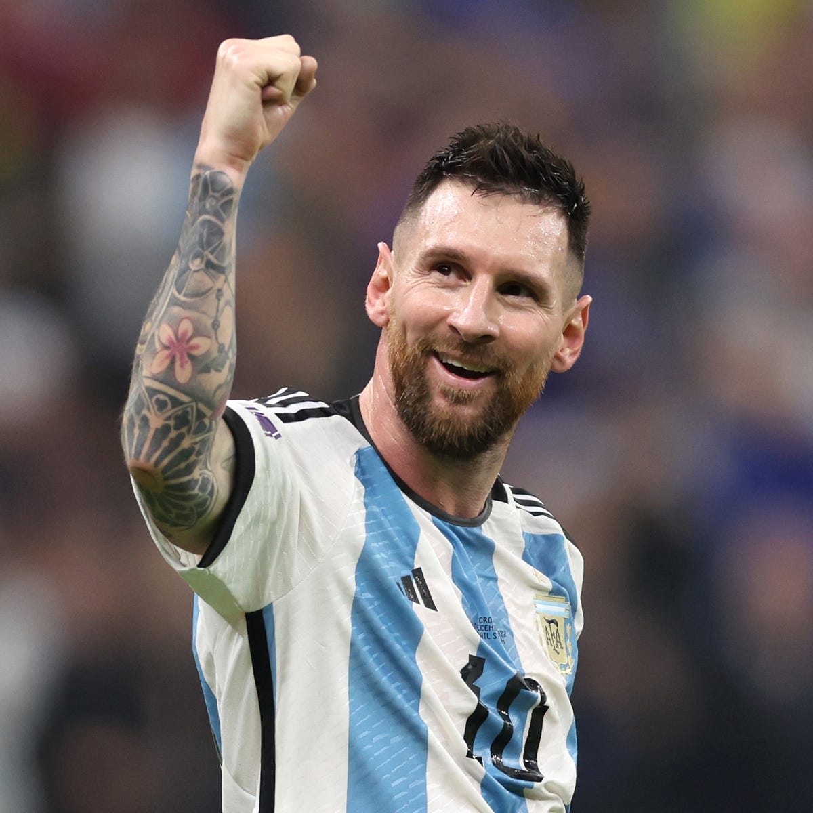
Lionel Messi
|
Messi blends unbelievable skill, vision, and consistency like no one else. Watching him weave through defenses and score feels like seeing football at its most beautiful. |
|
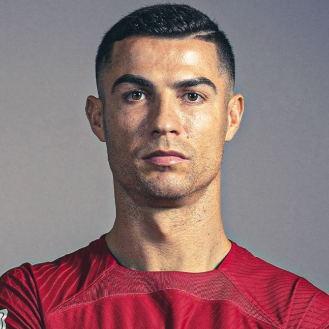
Cristiano Ronaldo
|
Ronaldo stands out for his athleticism, power, and clutch performances. Watching him score from anywhere and dominate in the air feels like seeing precision and speed turned into pure force. |
|
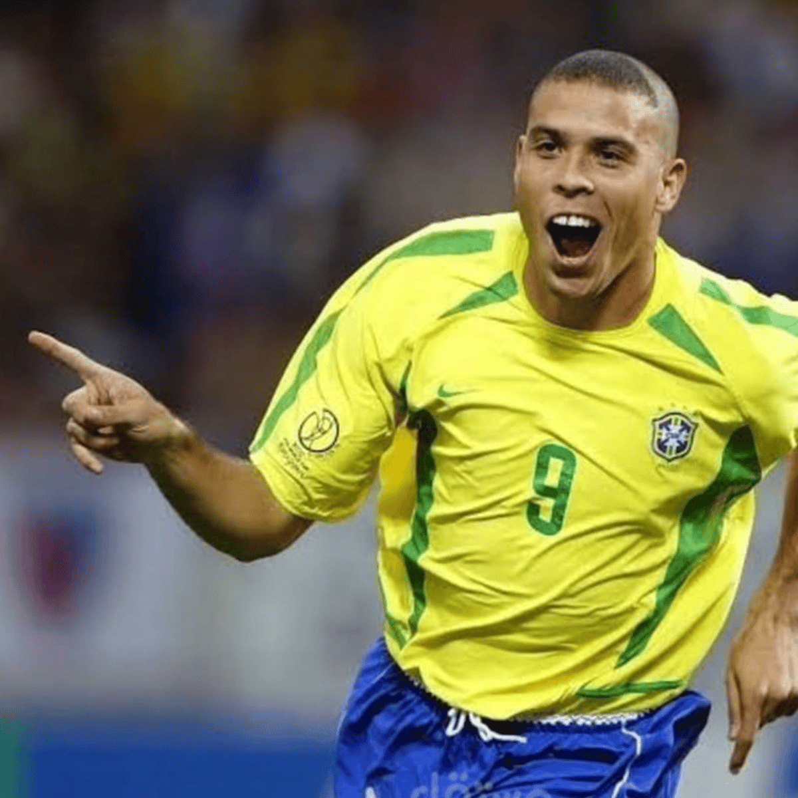
Ronaldo Nazário
|
Ronaldo (R9) was electrifying, with speed, skill, and finishing that felt unstoppable. Even with injuries slowing him down, he could still glide past defenders and score brilliantly. |
|
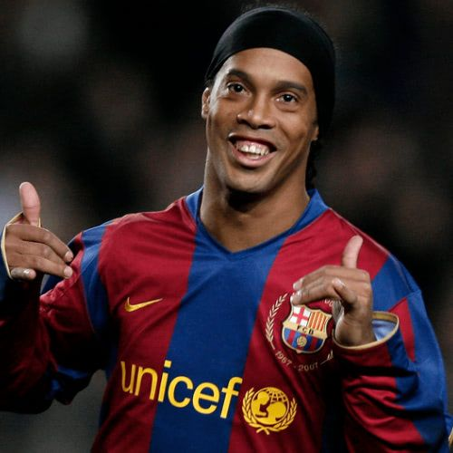
Ronaldinho
|
Ronaldinho was pure magic, full of creativity, flair, and joy. He could trick defenders and bend the ball in ways that made football feel like art. |
|
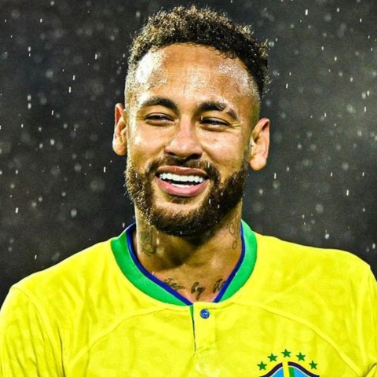
Neymar
|
Neymar is insanely skilled, with speed and flair that create moments of magic. He can dazzle defenders and score amazing goals, though it leans more on technique than the pure artistry of Ronaldinho. |